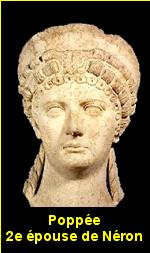

THỜI bấy giờ, vào khoảng năm 59. sau J.C... hầu hết các vương tôn công tử của Triều đại Néron đều say mê sắc đẹp lộng lẫy xa hoa của nàng Sabina Poppée. Nàng mới có 16 tuổi, mà đã làm cho các tuổi hoa niên của kinh thành La Mã nao nao rung động vì đôi mắt trong xanh như bích ngọc, nụ cười thu hút như nam châm, bộ ngực nở nang vun đầy như pho tượng Vệ nữ trong Cung điện Capitole.
Nhưng Sabina Poppée làm nghiêm, ít cười nói, không vui đùa. Nàng là con gái cưng của một gia đình quý tộc, mà nàng trước kia cũng là một hoa khôi lừng lẫy của Roma. Cho nên nàng khinh thường tất cả bọn thanh niên, dù là vương tôn công tử, theo van xin nàng một lời hứa hẹn. Không! Nàng đã từng bảo khẽ với mấy con a tỳ theo hầu hạ nàng: “Ta sẽ làm Hoàng hậu mới xứng đáng”. Nhưng lúc bấy giờ Hoàng đế Néron đã có Hoàng hậu Octavie. Ngài lại đang yêu mê mệt một con đầy tớ đẹp lộng lẫy, là Acte, người Hy lạp, đến nỗi Ngài xuýt bỏ Hoàng hậu Octavie để lấy con đầy tớ này.
Poppée lặng lẽ chờ cơ hội. Nàng biết rằng không sớm thì muộn Néron cũng sẽ ngã vào vòng tay nàng, Nàng còn trẻ quá mà, mới 16 tuổi, vội chi! Trong khi chờ đợi, nàng tạm kết hôn với một viên lão thần có thế lực trong Triều, Crispinus, một tay giàu có nhất ở kinh đô, để nàng hưởng cuộc đời hoa lệ theo ý thích. Nàng sinh cho ông này một đứa con trai. Đẻ xong, nàng lại càng đẹp lộng lẫy hơn nữa.
Nàng âm thầm sắp đặt mưu kế, giả bộ trung thành với chồng, để được tiếng là một thiếu phụ có đức hạnh đứng đắn, khôns lẳng lơ, lăng loàn, như những cô gái hoặc những cô vợ đẹp khác ở La Mã.
Nang ở luôn trong lâu đài của Crispinus, tiếp những quan khách bạn của chồng. Thỉnh thoảng nàng đi ra phố thì lấy một tấm màu xanh mỏng che mặt như không muốn cho ai trông thấysắc đẹp của mình. Ở nhà, nàng chỉ chăm lo săn sóc cho sắc đẹp mà thôi. Tóc nàng có một màu vàng hoe ánh ngời tự nhiên ai trồng thấy cũng trầm trồ khen ngợi. Nước da của nàng trắng mịn lúc nào cũng mát rượi và thơm ngác như hoa. Poppéc cho xây giữa nền lầu một hồ tắm hình bầu đục vừa vặn và xinh xinn, lát bằng đá xanh và đá hồng và mỗi buổi sáng nàng tắm bằng sữa lừa, để da nàng lúc nào cũng láng bóng như ngọc chuốt. Nàng nuôi mấy cô mỹ nữ Ai cập chuyên môn chế ra một thứ kem riêng biệt cho nàng thoa mặt. Cách làm thứ kem ấy được giấu kín không cho một người đàn bà nào khác biết cả. Luôn luôn nàng ở trong mát. Mùa hè nắng gắt, thì nàng che mặt với một chiếc mặt nạ thêu đẹp để ánh nắng khỏi chiếu vào mặt nàng, Nàng mới có 17 tuổi...

KHOE VỢ ĐẸP VỚI VUA
Một hôm, trong một buổi tiệc, Poppée làm quen với một vị tướng trẻ tuổi, đẹp, hầu cận Hoàng Đế Néron và là người thân tín của ngài. Tên chàng là Orthon. Chàng khéo tán thế nào mà bỗng dưng Poppée xiu lòng, và phút chốc để cho vị tướng trẻ tuổi chiếm được trái tim của nàng, rất dễ dàng mau lẹ. Ai nấy cũng ngạc nhiên vì Poppée đã được tiếng là một cô vợ nết na thùy mị, chưa hề phản bội chồng lần nào và đang hưởng hoàn toàn hạnh phúc trên nhung lụa. Nhưng ai có hiểu được thâm tâm của nàng? Viên lão tướng Crispinus tuy hết sức chiều chuộng cưng yêu cô vợ trẻ nhưng không dám đưa nàng vào cung điện nhà vua, vì sợ Néron chiếm đoạt mất người yêu. Trái lại. Orthon viên quan hầu cận của Hoàng đế, hứa sẽ tiến dẫn nàng vào Cung để khoe với Néron và hãnh diện với Triều thần rằng đây, Poppée, vị quốc sắc thiên hương của La Mã, là người yêu của chàng.
Hai tháng sau, Poppée ly dị với Crispinus, để kết hôn với Othon. Crispinus cũng vừa bị cách chức vì một tội lỗi trong Triều. Néron là một vị bạo chúa, tàn ác nhất trong Lịch sử La Mã. Ai nấy cũng run sợ trước mặt ông.
Othon do dự... Đã nhiều lần, chàng muốn giới thiệu với Hoàng đế cô vợ trẻ của chàng mới cưới, nhưng chàng e ngại. Bỗng dưng một hôm, sau một bữa tiệc trong Cung điện, Othon vội vã xin về sớm. Néron hỏi lý do, Othon say sưa đáp: “Tôi muốn về ngay với kho vàng của tôi... kho vàng mà Thượng đế đã ban cho tôi với sắc đẹp tuyệt trần mà cả LavMã đều thèm muốn, mà chỉ có tôi được hưởng…” (Dịch theo nguyên văn của nhà Sử học Cựu La Mã, facite, trons bộ sách Annales). Hoàng đế Néron, nghe mấy câu ấy, trố mắt ngó Othon rồi nở một nụ cười thèm thuồng: “À, vậy hả? Ngươi hãy về đem lá ngọc cành vàng ấy đến cho Trẫm ngắm xem nào!”
Đêm ấy, Othon ngủ không được, mà Néron cũng không ngũ được. Viên quan hầu lo sợ ngày mai đưa Poppée vào chầu Vua, Vua sẽ đoạt luôn.
Còn Néron thì thao thức mơ tưởng năm canh: Poppée đẹp như thế nào mà Othon khoe khoang dữ rứa?
Thật ra, Néron đã hết yêu Hoàng Hậu Octavie vì bà này không có con. Nhà Vua đã đem mối tình vương giả gieo rải khắp trong Cung điện, và sau cùng ông đã say mê con đầy tớ Hy Lạp, Acte diễm lệ yêu kiều..Nhưng cuộc tình duyên này đâu có vinh dự gì cho Hoàng Đế? Néron chờ đợi Poppéc...
POPPÉE NHÕNG NHẼO, KHÔNG ƯNG THUẬN...
Sáng hôm sau, Othon buộc lòng phải đưa vợ vào Cung. Vừa mới trông thấy nàng, Néron đã tối mày tối mặt, rồi cười ha hả, nắm hai bàn tay trắng mịn và thơm ngát của Poppée, kéo vào lòng mình.
Thoạt tiên, Poppée giả vờ như cũng đắm mê nét mặt anh hùng quắc thước của vị Đại đế La Mã. Nhưng nàng lễ phép né thân mình ra xa, không cho Néron mơn trớn. Nàng làm ra vẻ đạo đức, kháng cự bẽn lẽn:
- Muôn tâu Bệ Hạ, em là gái có chồng...
- Chồng em? Thằng Othon ấy à? Nó đâu có xứng đáng làm chồng em?
- Tâu Bệ Hạ, Othon đă cưới em rồi, em là vợ chàng, em đâu có thể xa chàng được?
Néron cười nghiêng ngửa, cười sặc sụa:
- Ha ha! Ha ha! Ta sẽ tống cổ Othon đi thật xa chớ bộ! Ta sẽ đày nó ra khỏi biên thùy Đế quốc La-Mã, em chớ lo!
Poppée lại nũng nịu, buồn rầu:
- Tâu Hoàng Thượng, không thể được... Em rất vinh hạnh được Ngài đoái thương, nhưng em rất tiếc, không thể nào được ạ...
Néron cảm động hỏi:
- Sao không được? Ta là Hoàng Đế La Mã ta muốn, không được sao?
Poppée nghiêm nét mặt, đôi mắt trong xanh của nàng nhìn thẳng vào mặt Néron, như đôi mắt rắn:
- Ngài là Hoàng Đế, vâng, nhưng Ngài đã lấy một con đầy tớ làm vợ rồi. Em đây đâu phải hạng nô tỳ? Lẽ nào em tự hủy danh dự của em để đứng ngang hàng với một kẻ tôi đòi Hy Lạp hay sao?
Néron lại cười sằng sặc:
- À thế thì ta đuổi Acte ra khỏi nơi này! Ha ha! Nơi này chỉ có Poppée, chỉ có Poppée trong trái tim của ta mà thôi!
Néron nâng một cúp rượu vang đỏ uống một hơi, rồi cười ha hả! Ha hả!
Tuy vậy, Poppée vẫn chưa bằng lòng...Còn Hoàng Hậu Octavie? Còn bà mẹ rất hung dữ của Néron, Hoàng thái Hậu Agrippine? Hai người đàn bà, hai địch thủ. Nàng đã chiếm được dễ dàng trái tim của Néron, làm sao nàng chiếm được ngôi báu Hoàng Hậu La Mã?
Néron là một Hoàng Đế tàn bạo nhất thời bây giờ, một Tần thủy Hoàng của La Mã, mà Hoàng thái Hậu Agrippine lại còn nổi tiếng là một bà mẹ hung dữ hơn nửa. Bà là một con cọp mẹ yêu tinh muốn ăn thịt cả con cọp con Néron. Ấy thế mà Poppée vị quốc sắc thiên hương vừa mới chiếm được trái tim của Néron, đã quyết tâm ám hại Agrippinc, để rồi sẽ trừ diệt Octavie vợ của Néron, đặng cướp ngôi Hoàng-Hậu.
Nàng nói kích Néron:
- Ngài là Chúa tể một Đế quốc vĩ đại nhất trên trái đất, Ngài là vị Hoàng đế lớn hơn các vị Hoàng đế, mà Ngài còn để Hoàng thái Hậu Agrippine sai khiến, có khác nào một đứa trẻ nít để cho mẹ nó dắt mũi hay sao?
Néron nghe Poppée mỉa mai như thế, tự thẹn nhưng làm sao được? Ông vẫn sợ Agrippine, và vỗ vai Poppée, cười lẳng lơ, khẽ bảo bên tai nàng:
- Em cứ yên tâm... Trẫm còn chờ cơ hội...
Poppée liền giả nét mặt rầu rầu, than thở:
- Em biết Hoàng-đế không thương em...! Octavie không đẹp hơn em, và lại không có con trai, nhưng Hoàng đế thương nàng hơn em.. Em biết thế. Nhưng không hề gì! Nếu Hoàng đế không trừ diệt Hoàng thái Hậu là người đã cưới Octavie cho Ngài, và cưng Octavie hơn em, thì... thôi... em sẽ trở về với Othon. người chồng của em, vì dù sao nó cũng yêu em hơn!
Nghe Poppéc dọa bỏ ông để tái hợp với Othon, thì Neron lo sợ mất người yêu, ông hứa thế nào cũng giết mẹ, để đẹp lòng nàng.
Đầu tháng Ba, năm 59, Néron lập mưu mời mẹ đến dự lễ cúng thần Minerve tại thành phổ Baies. Bề ngoài Hoàng đế tiếp đón Hoàng thái Hậu rất là trọng thể, và trước mặt bá quan văn vỏ, ông giả vờ hôn mẹ rất âu yếm và rót rượu nho trong cúp bằng vàng dâng lên Hoàng thái Hậu. Xong tiệc say sưa, Néron tiễn mẹ ra bờ sông và chỉ cho mẹ ruột chiếc thuyền mới đóng rất đẹp.
- Đây là chiếc thuyền mà con bảo đóng riêng để tặng mẹ. Anicéus, lính hầu cận của con, sẽ tiễn chân mẹ về.
Agrippine vui mừng, từ giã Hoàng Đế. Bà có ngờ đâu chiếc thuyền đẹp này, Néron đã bảo Anicétus đóng dối trá bằng hai miếng ván ghép sơ sài, rồi chạm trổ bề ngoài rất lộng lẫy để che giấu mưu mô. Thuyền ra giữa biển, tự nhiêu bị nứt làm đôi, chìm lĩm xuống đáy sâu. Anicétus đã có sẵn tấm ván chèo được vô bờ.
Nhưng Agrippine cũng chì bị thương xoànẹ bà cố hết sức bơi, Được nửa chừng gặp chiếc thuyền chài cứu vớt, Bà trở về Biệt điện của bà ở Naples.
Nghe tin Agrippine thoát chết, Néron lo sợ thế nào bà mẹ cũng trả thù ghê gớm. Ông liền sai hai lên hung thù đến ám sát ngay: một thằng đập một cây gậy bự vào đầu bà, một thằng khác đâm gươm vào bụng bà. Agrippine chết giẫy dụa trên vũng máu.
Được tin, Néron vui mừng, uống rượu say sưa, cười nghiêng ngửa trong lòng Poppée!
MÓN QUÀ CƯỚI CỦA EM
Agrippine chết rồi, Poppée chỉ còn Hoàng hậu Octavie như cái đinh trước mắt. Nàng quyết nhổ cho rồi cái đinh ấy. Nhưng lần này thật khó, bởi lẽ Octavie rất hiền lành và được dân chúng kính phục. Viện cớ gì, lập âm mưu gì, để hại Octavie bây giờ? Poppée đã nghỉ được một thâm kế. Nàng cho tiền người nhạc sĩ thổi sáo Ai Cập, đẹp trai, và đầy tớ của Octavie, bảo chàng phải đặt chuyện vu cáo Octavie đã quyến rủ chàng. Như thế Hoàng hậu sẽ bị kết án ngoại tình. Quả nhiên, không những chàng thổi sáo Ai Cập đi “thú nhận” rằng có thong dâm với Hoàng hậu, mà cả đến những con nô tỳ trong Cung điện cũng nhìn nhận đúng như thế. Hoàng hậu Octavie bị đuổi ra khỏi Cung cấm, và bị đày ra Campanye. Néron, dĩ nhiên đã có lý đo để tuyên bố ly dị Ovtavie, và 12 ngày sau, nhà Vua chính thức làm lễ thành hôn với Poppée.
Nhưng dần dần “vụ án bí mật” kia bị dân chúng phê bình gắt gao, chàng thổi sáo đã nói thầm cho nhiều người biết là chàng bị Poppée bắt buộc phải vu khống cho Hoàng Hậu, Dân chúng biểu tình rầm rộ và hâm dọa vào phá Cung điện. Néron hoảng sợ, vội gọi Hoàng Hậu Octavie trở về Cung. Dân chúng mừng rỡ, kéo nhau hàng ngàn vạn người tới Đền Capitole để tạ ơn các vị Thần đi cứu thoát Octavie. Những pho tượng Octavie được dân chúng đặt vòng hoa phủ kín chung quanh, còn các pho tượng của Poppée bị lật đổ xuống đất, sẵn trớn dân chúng kéo vào Cung điện của Néron, chửi bới Poppée, nguyền rủa Poppée. Nhưng rồi quân lính của Néron cỡi ngựa cầm roi da ào ạt tiến ra sân, đánh đập túi bụi các đám biểu tình. Những kẻ ngã xuống đều bị ngựa giẫm lên mình chết quằn quại trên vũng máu, những kẻ thoát được thì kéo nhau chạy tán loạn khắp cả kinh thành.
Poppée lặng lẽ ngồi trong Cung chờ cho đám căm thù bị giết hết. Rồi nàng quỳ bên chân Vua, giả vờ khóc lóc than thở:
- Dân chúng muốn giết Ngài, giết em? Nếu Néron bị lũ trâu ngựa kia ám hại thì còn gì là Đế quốc La Mã vẻ vang muôn thuở? Em sẽ tặng cho Hoàng đế Néron, cho dân chúng La Mã, một Hoàng nam để nối nghiệp các đấng Césars, dân chúng không bằng lòng ư? Dân chúng muốn tôn lên ngai Hoàng đế La Mã một đứa bé con của thằng thổi sáo Ai Cập, nếu nay mai Octavie sẽ mang cái bào thai tội ác kia ư?
Néron nổi giận, như điên cuồng. Ông uống liên tiếp năm sáu cúp rượu nho, nét mặt hằm hằm, đầy ác khí. Ông bèn gọi tên lính hầu Anicécus trung thành nhất của ông, và bảo nó phải cương quyết vu cáo là có thông dâm với Hoàng hậu Octavie. Nó sẽ bị đày đi xa, nhưng Néron sẽ ban thưởng cho nó rất nhiều vàng bạc châu báu, sẽ cho nó hưởng phước lộc đời đời.
Anicétus tuân lệnh. Ra trước tòa nó bầy đặt ra những cuộc gặp gỡ lén lút với Hoàng Hậu Octavie, và những cử chỉ tồi bại của Bà. Nó còn dám vu khống cho Octavie phá thai mấy lần. Néron dựa theo bản án của tòa kết tội Octavie và đày Bà ra đảo Pandatéria. Binh lính của Néron trói tay trói chân Hoàng Hậu bị truất thế và được lệnh lấy dao rạch những gân máu cho Bà chết xỉu, Poppée bảo kẻ thân tín chặt đầu Octavie, đem đến nàng. Nàng đưa ngón tay ngà ngọc chỉ chiếc đầu còn dính máu, và cười hỏi Néron:
- Món quà cưới, Ngài tặng em đó, phải không?
Néron cười sặc sụa, nốc luôn mười cúp rrợu nho, rồi ngả đầu vào ngực nàng, lẩm bẩm:
- Phải đó, em ạ!... Phải đó, em ạ!...
“EM MUỐN CHẾT TRẺ, ĐỂ ĐỪNG THẤY SẮC ĐẸP PHAI TÀN...”
Năm 62 sau J.C., Poppée hoàn toàn thỏa mãn nguyện vọng làm Hoàng hậu La Mã, vợ chánh thức của Néron, Hoàng đế danh tiếng đời đời trong Lịch sử La Mã.
Nhưng danh tiếng được bao lâu? Ba năm, vâng, chỉ được 3 năm thôi! Tuy Poppée tìm cách trở lại hiền lành, tu tỉnh, nàng lo sắp đặt lại các công việc trong Cung điện của Néron, nhưng nàng vẫn sợ mau đến tuổi già, vì nàng chỉ chuyên lo săn sóc sắc đẹp của nàng. Nàng bảo với Néron:
- Em muốn chết trẻ, để đừng thấy sắc đẹp phai tàn.
Chín tháng sau lễ cưới, tháng Giêng Năm 63, nàng sanh được một Công chúa đặt tên là Augusta. Néron mừng như được vàng, truyền lịnh cho dân chúng mở tiệc liên hoan toàn cõi Đế quốc. Thượng nghị viện La Mã quyết định lập một Đền thờ để tạ ơn các vị Thần. Nhưng chưa được 4 tháng, con bé đã chết. Néron thương khóc thảm thiết, và ký sắc lịnh truy tôn Augusta lên chức Nữ thần, và lập Đền Thờ. Để an ủi cơn đau xót, Néron truyền lịnh bắt đứa con trai của Poppée, Crispiuus, con riêng của Poppée với người chồng củ Cripinus, quăng xuống biển.
Thế rồi, một buổi chiều tháng 7 năm 56. Néron đi dự cuộc đua xe, về trể. Poppée càu nhàu gây gổ. Nàng đang có mang, bị Néron tức giậu đá một đá vào bụng, nàng té xuống chết tươi.
Thế là nguyện vọng của Poppée được chết trẻ, để khỏi thấy nhan sắc phai tàn, để được thực hiện một cách bất ngờ, và bi thảm.
Néron hối hận, khóc la inh ỏi, điên cuồng, ngày đêm không ngớt. Thượng nghị viện La Mã quyết định làm lễ quốc táng cho Poppée, nàng khỏi bị hỏa thiêu theo tục lệ bấy giờ. Sách sử có chép rằng Néror cho đi kiếm mua tất cả dầu thơm và nước hoa danh tỉếng của xứ Arabie để tẩm liệm xác chết của nàng
Các công chức, các vị Triều Thần, các nhân vật trọng yếu, ai không khóc Poppée, hoặc khóc ít thôi đều bị Néron xử tử.
Ai không sốt sắng trong việc lập đền Thờ nàng đều bị đày ra biên ải... Bất cứ ai trong chính phủ của Néron mà không than khóc Poppée, đều bị giết chết, hoặc bị lính đánh đập tàn nhẫn.
BA NĂM SAU...
Mọi người thấy vậy hoảng hốt vội vàng đua nhau khóc Poppée, khắp nơi nơi!...Cả Đế quốc La Mã đều
ngập nước mắt khóc Poppée... và hăng hái dựng Đền Thờ “vì Nữ Thần của Dân-tộc” theo lệnh của Néron Hoàng Đế.
Nhưng 3 năm sau, Néron chết. Nhà vua độc tài vừa nhắm mắt trút hơi thở cuối cùng, thì toàn thể dân chúng La Mã nô nức kéo nhau từng đoàn đi đốt phá tất cả các đền thờ “Nữ Thần của Dân tộc”, đập đổ, chà nát các pho tượng của Poppée và Néron. Các Thi sĩ và các nhà Viết Sử, đua nhau làm thơ, viết sách, nguyền rủa Néron và con ác phụ bạo tàn, kiêu căng phách lối, đã làm cho toàn dân La Mã điêu đứng, âm thầm nhịn nhục suốt bấy nhiêu năm dưới sách độc tài.
Othon, người chồng thứ hai của Poppée, đã bị Néron cướp vợ và đày đi xa, được dân chúng mời về, tôn lên ngôi Hoàng Đế...
Lịch Sử thuờng để dành cho loài người làm chuyện bất ngờ!